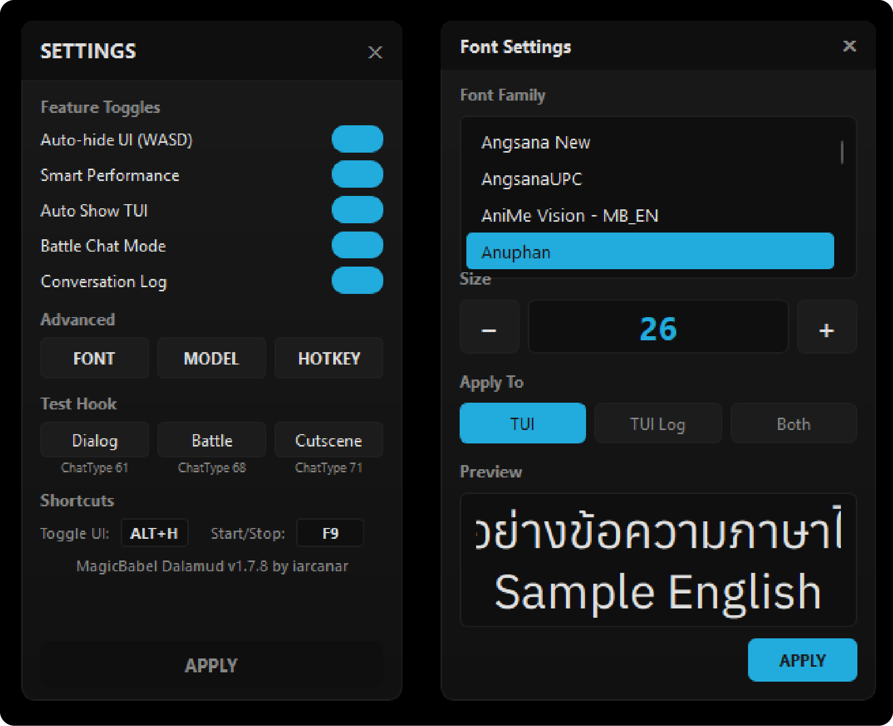

Theme + Settings
12 theme palettes, dual font storage (TUI / Logs), dual settings architecture (PyQt6 active / Tkinter legacy), splash screen + updater.
Theme System
pyqt_ui/styles.py + appearance.py. 12 modern palettes (replaced old 5).
12 Palettes
1. Carbon
bg #0d1117
accent #58a6ff
2. Graphite
bg #16181c
accent #7c8aed
3. Slate
bg #0f172a
accent #38bdf8
4. Mocha
bg #1e1e2e
accent #cba6f7
5. Tokyo
bg #1a1b26
accent #7aa2f7
6. Dimmed
bg #22272e
accent #6cb6ff
7. Neon
bg #0a0e1a
accent #00d9ff
8. Synthwave
bg #1a0d2e
accent #ff5599
9. Forge
bg #1a0f0a
accent #ff8c42
10. Snow
bg #ffffff
accent #0969da
11. Cream
bg #faf6ed
accent #c2410c
12. Mint
bg #f0fdf4
accent #15803d
derive_palette()
derive_palette(primary, secondary, surface=None, text_override=None)- Proportional surface elevation:
base = max(0.018, min(0.045, primary_l * 0.32))— very dark themes ใช้ shifts เล็ก, lighter themes ใช้มากขึ้น - Light-theme branch (bg luminance > 0.5): aggressive negative shifts (
-0.075surface,-0.130border) สำหรับ visibility on near-white bg - WCAG
toggled_textthreshold:< 0.179 → white, elsedark(เคย 0.5 — ทำให้ light accents เช่น#58a6ffใช้ white text → contrast 2.4:1) - Helpers:
_shift_lightness(),_desaturate(),invert_pixmap(),is_light_theme()
get_theme_color(key, default=None) Rule
ถ้า color_value is None and default is None: return None
ห้าม return fg_color fallback เมื่อ default เป็น None — นั่นคือสาเหตุ legacy bug ที่ทำให้ปุ่มทั้งหมดเป็นสีขาว.
Migration
ใน appearance.py:load_custom_themes:
- Detect old default-theme accents/names → wipe + re-create with v2 design
- Custom user colors preserved
Theme Manager UI — pyqt_ui/theme_panel.py
ThemeSwatch(QWidget)— custom paint with 5 color dots (bg_titlebar, surface, border, accent, text)- 400×520, 4 cols × 3 rows for 12 themes
- Instant apply — ไม่มี APPLY button
- 4-color picker (bg, accent, surface, text). "Auto" state: diagonal stripe + dashed border
mousePress y ≤ 46) — คลิก swatch ที่ drift 1-2px ไม่ขยับ panel อีกแล้ว.
White-Icon Inversion
invert_pixmap() — RGB-invert preserving alpha (QImage.invertPixels(InvertRgb)).
header_bar.py + bottom_bar.py เรียก update_icon_theme(invert: bool) จาก main_window._apply_theme() ตาม bg luminance:
- Dark bg → keep white icons
- Light bg (Snow / Cream / Mint) → invert to dark
Font System — Dual Storage
| UI | Settings key | Default font | Default size |
|---|---|---|---|
| TUI | settings["font"] / ["font_size"] | Anuphan | 24 |
| Logs | settings["logs_ui"]["font_family"] / ["font_size"] | Anuphan | 16 |
Bundled Fonts
- Anuphan — default Thai font
- FC Minimal Medium — italic style for
*text* - Caveat — Polaroid handwriting (English)
- Pacifico
- Google Sans 17pt
Tkinter uses OS resolver. PyQt6 needs QFontDatabase.addApplicationFont() — QtFontManager (pyqt_ui/qt_font_manager.py) handles registration lazy (runs on Settings/Font panel open).
FontPanel Target System
Target keys: tui / logs / both — save as font_target_mode.
# MBB.apply_font_with_target()
if target_mode in ("tui", "both"):
self.settings.set("font", font_name, save_immediately=False)
self.settings.set("font_size", font_size)
if target_mode in ("logs", "both"):
if not translated_logs_instance:
self.settings.set_logs_settings(font_family=font_name, font_size=font_size)font/font_size เมื่อ target=logs
จะทับ TUI font.
Open from Logs UI
ใช้ _ensure_font_panel() + reload_target(). NEVER _toggle_font() (จะปิด panel ถ้าเปิดอยู่):
# Correct:
sp._ensure_font_panel()
fp.reload_target()
fp.raise_()Bidirectional sync: FontPanel +/- ↔ Logs UI +/-. _sync_font_to_settings() persist + update FontPanel ถ้าเปิดอยู่ & target=logs.
CRITICAL Gotcha — QSS Overrides setFont
setFont() silently
Two workarounds:
- QSS-styled containers: apply
font-family+font-sizeผ่าน QSS, ไม่ใช่setFont() - QLabel/QLineEdit/QTextEdit: ใช้ inline
setStyleSheet(f"font-size: {n}pt;")(inline wins กว่า class rules) OR pre-render เป็น QPixmap ผ่านQPainter.drawText(bypass QSS pipeline — Polaroid pattern)
Settings Backend
get_logs_settings()default:{width: 480, height: 320, font_size: 16, font_family: "Anuphan", visible: True}set_logs_settings(**kwargs)accepts: width, height, font_size, font_family, visible, x, y, transparency_value, logs_reverse_mode- ใน Settings class:
self.settings["key"] = value(dict, ไม่ใช่.set())
Settings — Dual UI

pyqt_ui/settings_panel.py
PyQt6 panel. เพิ่ม toggles ผ่าน _add_toggle(). Auto-saves on change.
Thai section labels: "ตั้งค่าอื่นๆ" / "ทดสอบการแปลรูปแบบต่างๆ" / "ปุ่มลัด"
settings.py
Tkinter (legacy). Backend อยู่ที่นี่ — แต่อย่าเพิ่ม toggle UI ใหม่.
Modern Toggle Switch
iOS-style ToggleSwitch in settings_panel.py:
- 44×22 → 52×26 (v1.8.0 +20% scale)
- 16px sliding knob, 160ms OutCubic animation
- Drop-in API:
isChecked(),setChecked(),toggledsignal,stateChanged(compat) set_palette(palette)— theme-aware
Backend
Settings class: get(), set(), save_settings(), set_logs_settings(**kwargs).
Restart App
Footer button ใต้ APPLY. Countdown 3..2..1 บน button text.
restart_app() → exit_program() → _spawn_new_instance() → sys.exit(0)subprocess.Popen(DETACHED_PROCESS|CREATE_NEW_PROCESS_GROUP, close_fds=True)- Pipe ปิด BEFORE spawn — new instance reconnect clean
- Frozen vs dev cmd-line ผ่าน
getattr(sys, 'frozen', False)
Splash Screen
MBB.py — Tkinter Toplevel + PIL rendering, max 1280×720, aspect-preserved, centered on screen. Redesigned v1.8.14 (2026-05-20) via prototype tab.
Visual
- PIL rounded mask +
transparentcolor(no border) - Corner radius:
max(14, new_width // 48)— subtle (~22px at 1080 wide). Halved from oldmax(28, w//24) - Image:
assets/MBBvisual.jpg(fallback chain:.png→.jpeg→_mar26.png→_legacy.png) - Bottom-center group:
[meteor icon] [4px gap] [version text]— NO dark bar background - Meteor icon (
assets/mbb_meteor.png): heightmax(60, font_size × 3.7)≈ 88px at font 24, width auto (preserves ~3:2 aspect). Cyan halo + dark drop-shadow + sharp icon composited via PILalpha_composite - Icon vertical-centered on text vertical-center — overflows top/bottom so meteor trail keeps its dynamic shape
- Version text: bright cyan
#00e5ff, font Anuphanmax(22, new_width // 44)≈ 24px at 1080 wide - Text layering (no bar bg, so heavier shadow stack): dark drop-shadow halo (radii 18/6, alphas 150/200) + cyan glow (radii 12/6/2, alphas 90/140/200) + sharp 1px shadow + sharp cyan top
- Bottom margin:
max(36, new_height × 0.07)
Control — 2 gates
| Layer | Key | Effect |
|---|---|---|
| Master | enable_starting_key_visual (Settings) | False → no splash |
| Daily | splash_skip_date (checkbox) | matches today → skip |
settings.json โดยตรงด้วย json.load/dump — splash สร้าง (~line 549) BEFORE Settings() init (~line 698)
Timing
- Fade-in: 400ms (blocking)
- Min hold: 5s
- Fade-out: 500ms (non-blocking via QTimer chain)
Updater UI
updater/updater.py. 640×620 window. Logo mbb_meteor.png (154×100 subsample), "MBB Updater" 24pt + subtitle 12pt.
Visual states
⏳ Checking
Animated rotating-arc spinner (Canvas 28×28, 40ms redraw) + animated dots "ตรวจสอบ.", "..", "..."
✓ Final
Colored badge (green/cyan/amber/red) + icon + label
Behavior
- 404 จาก GitHub → green "✓ เวอร์ชั่นของคุณเป็นเวอร์ชั่นล่าสุด" (positive framing)
- Auto-hide "Update Now" เมื่อ on latest → เหลือแค่ "ปิด"
- Dev-mode short-circuit:
.pyskips Stage 1 (copy-to-temp + relaunch), goes to Stage 2 with auto-targetdist_test/MBB _resolve_asset(name)3-path:sys._MEIPASS→ repo dev → installed_internal/. Rejects absolute paths +..(path traversal guard)WM_DELETE_WINDOW→_on_closecancels spinner/dots timers (avoid TclError on shutdown)_start_spinner+_start_dots_animationcancel previousafter_idก่อนเริ่ม (defensive)